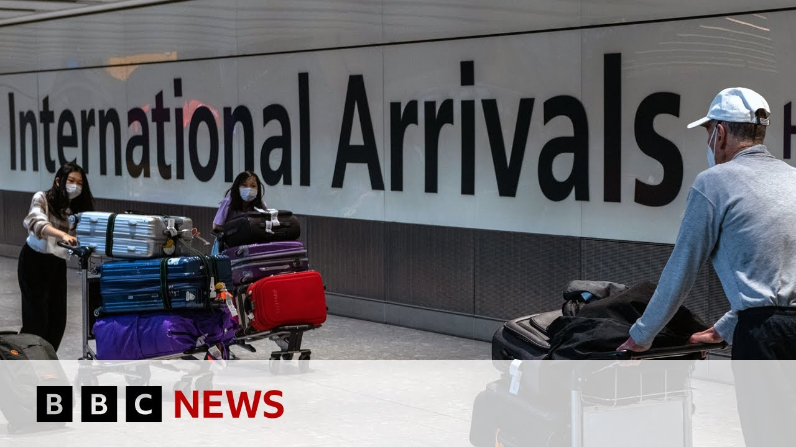

【英国净移民人数在2024年几乎减半至43.1万人，英国国家统计局称 | BBC新闻】
Summary: The latest UK migration data shows net migration halved from 860,000 in 2023 to 431,000 in 2024, driven by fewer arrivals and more departures, with work and study as key factors, while Coventry reflects immigration's mixed local impacts.
摘要： 最新英国移民数据显示，净移民人数从2023年的86万降至2024年的43.1万，主要因入境者减少和离境者增加，工作和学习是主要因素，而考文垂反映了移民对当地的双重影响。

⏱️ Estimated Reading Time: 9 min
The latest figures for migration to and from the UK have just been released by the Office for National Statistics.
英国国家统计局刚刚发布了最新的英国移民数据。
Well, they show that net migration to the UK is estimated to have halved from 860,000 in the year ending December 23 to 431,000 in the year ending December 2024.
数据显示，英国净移民人数从截至2023年12月的一年内的86万减半至截至2024年12月的一年内的43.1万。
Well, Robert Cuff is the BBC's head of statistics and he explained the significance of the drop having in one year down from near record levels in 2023 down to as you said around 430,000 last year is absolutely huge and it will probably be welcomed by the government who promised in their manifesto to bring migration down.
BBC统计主管罗伯特·卡夫指出，移民人数从2023年接近历史高位一年内骤降至约43万是巨大变化，政府可能乐见这一结果，因其承诺过减少移民。
But of course, many will point out at the same time that the wheels for these falls were set in motion a long time ago.
但许多人也会指出，这种下降趋势早在很久前就已启动。
And you can really see that when you start to break into the figures of who's coming, who's going because remember this is a combination of the people who come to the UK to stay for a year which has fallen and the people who leave the UK uh for more than a year which has also risen.
分析具体数据可见，来英停留至少一年的人数减少，而离英超一年的人数增加，两者共同作用。
So that double whack if you want has contributed to this really really massive fall in in migration.
这种双重打击导致了移民人数的急剧下降。
So just to be clear this is all legal migration.
需明确这是合法移民数据。
This is people coming here to work or what what exactly does this constitute?
这些人包括来英工作等目的者——具体构成如何？
So this covers everyone who's coming to the UK.
统计涵盖所有来英人员。
So the immigration part, everyone who's coming to the UK for more than a year.
即移民部分指所有计划停留超一年者。
So if you're doing nine month course, doesn't count.
因此九个月课程者不计入。
If you get a job and stay on for an extra four months, then you're in.
若获得工作并多停留四个月则计入。
And that could be for study, for work, it could be for uh asylum, it could be for humanitarian reasons, you could be coming on a small boat.
包括学习、工作、寻求庇护、人道主义原因，甚至乘小船抵达者。
But the biggest reason by a mile that people come to the UK is to study or to work.
但最主要的来英原因是学习和工作。
Those are the big drivers and we've seen big falls in those numbers last year.
这两大驱动因素去年均显著减少。
That's Robert Cuff there.
以上是罗伯特·卡夫的分析。
There's more on that story of course on the BBC News website.
更多详情可参阅BBC新闻网站。
Well, whatever the precise figures, some towns and cities have undergone changes as a result of immigration.
无论具体数据如何，移民已改变部分城镇面貌。
Dan Johnson sent us this report from Coventry in a multicultural city.
丹·约翰逊从多元文化城市考文垂发回报道。
Here's one street showcasing how Britain's welcomed people from around the world.
这条街展现了英国如何接纳全球移民。
You got Afghans, Ghanaians, uh Nigerians, Indians.
有阿富汗人、加纳人、尼日利亚人、印度人。
Oh, you name you name any any person in the world, you can find it here.
世界各地的人都能在这里找到。
Daniel's part of the Polish wave arriving two decades ago.
丹尼尔是二十年前波兰移民潮的一员。
Migration is always good.
移民总是有益的。
You know why?
知道为什么吗？
Because give the blood in the system.
因为它为系统注入活力。
You'd say people still need to be allowed to come back.
他认为仍需允许人们移民。
Of course, of course.
当然，当然。
Of course.
当然。
Not not maybe that big numbers, but controlling that.
或许不是大规模，但需控制。
You don't want to have the uh dingies coming over and you don't know who's coming.
不能任由小船载着不明身份者涌入。
Coventry's grown faster than most cities and now more than a quarter of residents here were born overseas.
考文垂增长快于多数城市，超四分之一居民出生在国外。
But not everyone is thriving.
但并非所有人都过得如意。
I mean, I've um take today £750.
比如我今天只赚了750英镑。
Jane is considering closing down.
简考虑关店。
It's all different nationalities, but some of them are not getting on with each other.
各族裔间存在摩擦。
Really?
真的吗？
Yeah.
是的。
Couple of shops up the road.
沿街几家店铺。
They've been raided a couple of times by the police.
遭警方多次搜查。
It's just not not a nice street anymore.
这条街不再安宁。
Born and raised in Australia.
莎拉在澳大利亚出生长大。
Sarah moved here 25 years ago.
二十五年前移居至此。
I feel like England it is is known for just being the handout society.
她觉得英国以福利社会著称。
The NHS and like everything is just under strain or broken already.
国民医疗体系等已不堪重负。
And it's not the NHS's fault.
这不是医疗体系的错。
I just feel like there's just too many people.
只是觉得人太多了。
Too many people.
实在太多。
So would you support stricter controls make it harder for people to come here?
是否支持加强移民管控？
Definitely.
当然。
Even though you came you were allowed it.
尽管你自己曾是移民。
Yeah.
是的。
Yeah.
是的。
I was allowed it.
我曾被允许。
I know sometimes I feel a bit like, oh, some choose Coventry, others get placed here, often in hotels.
有些人选择考文垂，有些人被安置于此——常住在酒店。
There's one asylum seeker for every 170 residents.
每170名居民对应一名寻求庇护者。
That's one of the highest ratios in the country.
属全国最高比例之一。
You say you've lived here for a year.
你说已住了一年。
Just down the street, we found Paul.
沿街我们遇见保罗。
I was going to be homeless.
他曾濒临无家可归。
Yeah.
是的。
Got an eviction notice.
收到驱逐通知。
Struggling to keep a roof over his head.
艰难维持住所。
I got off nothing.
一无所有。
Just hit a blank wall.
陷入绝境。
There was no help.
无人相助。
There was no help.
毫无帮助。
No.
没有。
How do you feel about that?
感受如何？
I felt really really angry at the time.
当时非常愤怒。
Really angry, you know.
极其愤怒。
I thought why are the people being prioritized, you know, and I've worked 40 years of my life, paid my taxes, paid my national insurance.
不解为何他人被优先照顾，而自己纳税四十年却得不到帮助。
Then we met Muhammad.
随后遇见穆罕默德。
Me myself, I was an asylum seeker.
他曾是寻求庇护者。
Oh, really?
真的吗？
Yes.
是的。
Yeah.
是的。
And where from?
来自哪里？
I'm from Sudan.
苏丹。
Settled here for 20 years, but aware of others who are cheating the system.
定居二十年，但知悉有人钻制度空子。
There's some people from different countries and their countries are good.
有些人来自安定国家。
So there's there's no problem in the countries and they come and they ask asylum as a different uh nation and those kind of people.
却冒充他国申请庇护。
Yeah.
是的。
I think that's yeah that's that's like you're lying to the system.
他认为这是欺骗制度。
Coventry's been proud to offer refugees sanctuary.
考文垂以庇护难民为荣。
Lorraine came from Malawi initially as a student and I got 5 years refugee status.
洛林最初从马拉维以学生身份到来，后获五年难民身份。
That was October 2022.
2022年10月获批。
And Gloria left Ghana and was granted asylum here eventually.
格洛丽亚离开加纳最终在此获庇护。
I was refused four times.
曾被拒绝四次。
Why were you so determined to stay here?
为何坚持留下？
Because I want to rebuild the my life.
为重建人生。
Even though I was in that asylum process, I was helping the people of this country.
即便申请期间也在帮助当地人。
I was volunteering because I'm I'm a very hardworking person.
通过志愿服务展现勤劳本色。
They've confronted prejudice and misinformation.
他们直面偏见与误解。
A woman just started, "Oh, you know what? I work every day, but asylum seekers are given a house, are given a a car. They have given on benefit."
有妇女称："寻求庇护者获赠房屋汽车和福利"。
I said, "What? I was an asylum seeker. I work. I'm not on benefit. I've not been given a car. I've not even been given a house. I rent. I pay now."
她反驳道自己曾为寻求庇护者，却自食其力未获任何赠予。
So, it is based on politics that people exaggerate and they say migrants are your enemy.
认为政客夸大其词将移民塑造成敌人。
I don't have anything.
我一无所有。
Even if you get rid of me, it will not change your life.
即便驱逐我也无法改善你的生活。
Thumbs up.
竖起大拇指。
Thumbs up.
点赞。
Wow.
哇。
Schools are a front line of integration, and more than half the pupils in this city are from ethnic minority families.
学校是融合前沿，该市超半数学生来自少数族裔家庭。
There's a challenge of language and growing numbers.
面临语言与人数增长挑战。
Here, a temporary classroom is helping, but they're not alone in trying to work out how many more will need to be accommodated in future.
临时教室缓解压力，但未来需安置更多人。
Dan Johnson, BBC News, Coventry.
BBC新闻丹·约翰逊，考文垂报道。